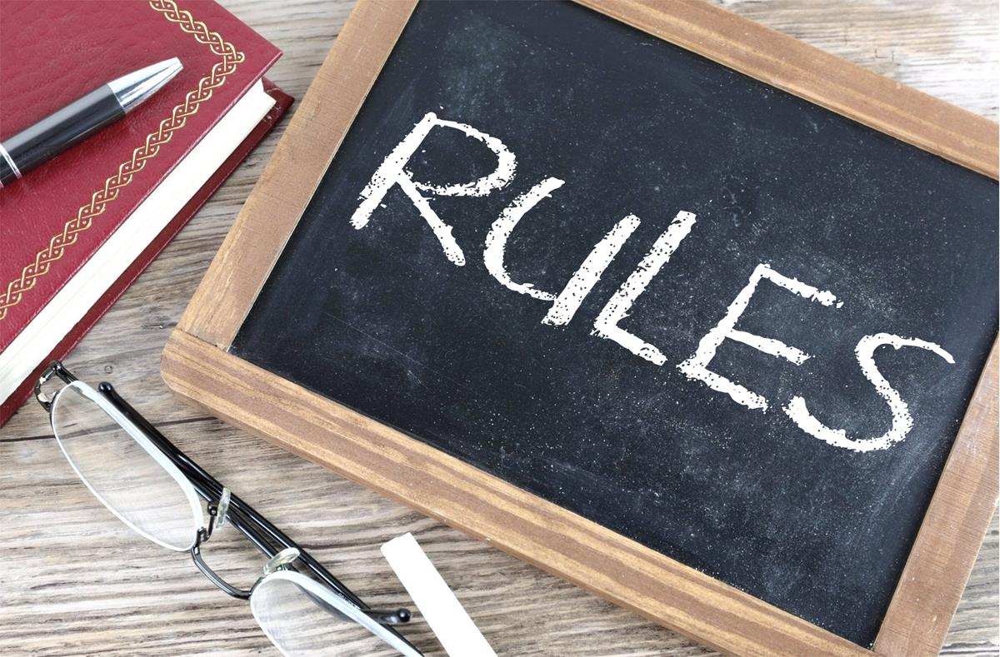

Rules & Guidelines
In soccer, there are certain rules and guidelines in order to keep the game fun, safe and playable. Here are some of them:
- You cannot use your hands. Only the goalie can use their hands.
- No punching people. It is recommended to not be too aggressive.
- When the ball goes out of bounds, the team who didn’t touch the ball last gets it. If the ball goes out on the sides of the field, it is a throw-in. A player throws the ball over their head onto the field.
- A player cannot be passed the ball if they are between the opposing team’s last defender and the goal. They can dribble into that region, but they cannot receive the ball there.
- The clock doesn’t stop for throw-ins, injuries or any other complications. However, the referee may add time at the end of the game if they decide that it is necessary.
- In the event of a foul, the team who was fouled may receive an advantage. Some of these advantages include penalty kicks and free kicks. Penalty kicks are when players stand behind the goal line and a designated player has the opportunity to shoot directly at the goalie. This is called a direct kick. A free kick is given for when the foul is not inside the goalie box. Now depending on if it is a direct or indirect kick, the procedure is different. For direct kicks, the player can directly shoot at the goal. For indirect kicks, the player has to pass to a teammate. This teammate can then shoot and hopefully score.

Nick Youngson - Picpedia - CC-BY-SA